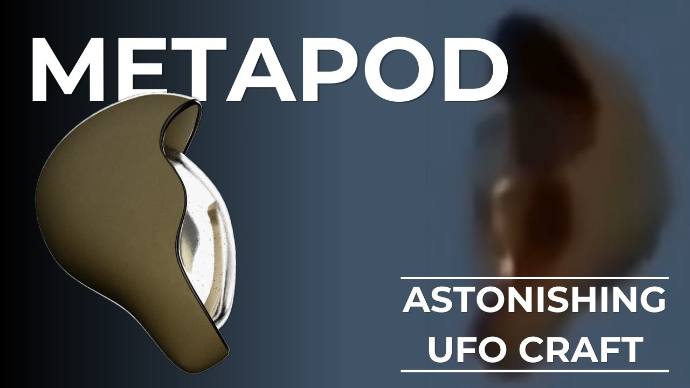

Incredible UFO Footage - METAPOD

Published: 2024-02-13 · Duration: 18:56 · Channel: UAP Gerb
Description
Hey guys, today we are performing a critical analysis on another one of my favorite pieces of UFO footage - the Metapod footage! Originally filmed in Spain in 2015, the metapod footage details a stunning craft comprised of a bulk body and transparent, almost glass-like face. This craft has been seen in numerous other pieces of footage dating back all the way to 1998. If this footage is the real deal, it is the BEST up-close look at an anomalous craft we have EVER seen.
The footage 3 of the 5 characteristics of Lue Elizondo's UAP characteristics: 1. No visible means of propulsion/ Antigravity 2. Instant Acceleration 3. Low Observability
Please enjoy this breakdown as we try and dive into the origins and validity of the Metapod UFO Footage! And yes this is a 19-minute video breaking down less than two minutes of footage. UAPGerb does NOT mess around!
0:00 Intro 0:58 Full Footage 3:28 Context 7:49 The Craft 10:07 The Voices 12:10 The Debunkers 13:20 Other Sightings 17:07 Conclusion
JOIN THE UAPGERB DISCORD: https://discord.gg/CygHD3g4kr
Music by the always talented: https://www.youtube.com/channel/UCz71_7z7NphLPZ0l_7G3Llg
UFOVNI (OG Uploader): https://www.youtube.com/@UFOVNIChannel/videos
Stabilized Video: https://www.youtube.com/watch?v=_KoVICnyrT4
Original Video: https://www.youtube.com/watch?v=gNMs5MP02zk
Web Archive (Earliest Mention): https://web.archive.org/web/20150915215346/http://www.etseetc.com/2015/09/ovni-inusitado-com-et-dentro-real/
Thirdphaseofmoonpost: https://thirdphaseofsun.blogspot.com/2015/09/el-extrano-ovni-que-escaneo-el-terreno.html#more
Reddit Translation: https://www.reddit.com/r/UFOs/comments/u3nqd3/comment/i4xplek/
Reddit Render: https://www.reddit.com/r/UFOs/comments/u4ede9/made_a_couple_of_3d_renders_of_the_metapod_uap/
AI Enhanced Clip: - https://www.reddit.com/r/UFOs/comments/u1c2gy/the_objectufo_slowed_down_200_ai_chroma_ai_fast/
Metabunk Thread: https://www.metabunk.org/threads/metapod-ufo-top-voted-post-of-the-month-on-r-ufos-maybe-top-of-all-time.12375/page-6#post-288547
Monterrey Witch, Mexico 2006: https://www.youtube.com/watch?v=CeGkjIMzsVs
Texas, 2023: https://www.youtube.com/shorts/eYEggbQHYZY
1998: https://www.youtube.com/watch?v=iHQQFNKwCoQ
Vancouver 2021: https://www.reddit.com/r/UFOs/comments/qg0mtz/related_to_the_floating_cgi_video_this_was_taken/
ufo #uap #uapnukes #uapdisclosure #ufology #ufonews #ufosightings #uapsightings #ufofootage #uapfootage #hynek #condoncomittee #Jallenhynek #projectsign #projectgrudge #projectbluebook #bluebook #ufocongress
Transcript
Show transcript
More often than not, UFO footage is grainy, blurry, minuscule, and difficult to make out, or is a collection of pixels on a downgraded USG FLIR platform. This often leads to the video's feeling impersonal. But how often do you get to see a truly anomalous craft up close? Well, there is one video of a UFO filmed in Spain that, if true, is one of the best close-up views of a UFO ever recorded. Guys, I am UAPGurb, and I'm not wasting any time today. So let's do another footage analysis of one of my favorite pieces of alleged UFO footage, the famous Metapod, as filmed in El Escorial Madrid, Spain on the 6th of September 2015. This is one of my all-time favorite pieces of alleged footage that has shocking connections to other sightings and footage worldwide. So let's take a look first at our footage stabilized. Let's take a look at the footage. This is a footage of a UFO filmed in El Escorial Madrid, Spain on the 6th of September 2015. This is a footage of a UFO filmed in El Escorial Madrid, Spain on the 6th of September 2015. This is a footage of a UFO filmed in El Escorial Madrid, Spain on the 6th of September 2015. This is a footage of a UFO filmed in El Escorial Madrid, Spain on the 6th of September 2015. So what do you think after first watch? Pretty astounding, right? Similar to the fly-by video, this footage is too anomalous, too clear, and too strange to possibly be true, right? Well, let's start a little analysis and kind of see what we can uncover. I want to disclaim that I am using YouTube channel ItsBS's stabilized footage of the metapod due to the fact that the original poster of this video UFO VNI has taken down the footage as well as the 2017 reupload by YouTube channel UFO invasions. ItsBS's channel will be listed in the video description. Unlike fly-by, we can actually trace back the origins of the metapod footage. On September 7th, 2015, a man named Modesta emailed YouTube channel UFO VNI as mentioned above after reading that this channel could publish UFO footage. On screen now is the original email, and here let me read a transcription translated into English. Hello UFO VNI. I have read on your YouTube page that you can publish the video that I took the day before yesterday, September 6th, 2015, together with a friend named Moises. My name is Modesto. What we saw yesterday I sincerely know was not from here. I have been in the countryside for many years and I have been able to hear the wings of storks in flight. What we saw did not make any noise, it descended vertically and he walked away. I must admit that I am somewhat nearsighted but my friend can see hairs and quails in the same way as finding a needle in a haystack. My friend commented that he saw something moving inside the UFO. Something alive with limbs, I believe it. Due to personal reasons and the location of the sighting we do not want to give the exact location of the sighting, but I can tell you that it was near El Escorial, direction Las Navas del Marques. El Escorial is a place where strange things happen, but not in the city, but in the nearby mountains. Personally, I neither believed nor did I believe in UFOs or extraterrestrials. It simply seemed like, quote, nonsense from Uncle Iker and four other idiots, end quote. Now, that is, from that moment on, I knew that it wasn't from here, that it wasn't human. My friend Modesto, however, a little more attack at turn and from the town than me, I never known what he thought but it seems that he is not surprised to see it. After the video that I sent him and some photos that, as you will see, did not turn out very well, my friend Modesto told me, quote, here again, in reference to the object. After asking him about the meaning of his expression, he did not want to say much more, except that it is not the first time he has seen it and that his father, now deceased, had also seen it. If it is of importance to him, I will ask, give him the GPS data and exact location, but only for his investigation so that he does not make said data or the relationship with the video public. The place is called redacted and is at the coordinates redacted in the direction in which he went was north south. I asked for strict rigor and commitment to save my personal or contact information. On the contrary, I send and deliver the video and I give it to you. For your use and disposition as you please. PS, I'll send you the video later with a link to the cloud or if you prefer, I'll send you the micro SD card by email. What stands out to me about this email? Well, for one, the sender Modesto claims that he is Modesto and his friend Moises recorded the footage. Later on, he says, quote, my friend Modesto. Is this a careless mistake of using pseudonyms as the sender was already unwilling to provide the exact location of the sighting? Anyways, Modesto goes on to state that this was not the first time his friend had seen this object and that his father had seen it also. Modesto's companion also said he saw something moving inside of the UFO. It's unknown to me why UFO V and I took down this video, perhaps at Modesto's request, but I have contacted him to learn more. Posts about this footage began popping up around the internet almost immediately, as seen in this now taken down Portuguese forum on September 8, 2015, called ETS and ETC. Translating this page, we can see the site does not know if the video is real or fake, but is impressed nonetheless. What caught this site's attention was realistic zoom, very realistic focus and blur, the shape of the UFO, and similarities to the 2006 La Bruja in Mexico. I'll cover this soon. A post also appeared on the site Third Phase of the Sun on September 11, 2015, which additionally detailed UFO V and I's correspondence with Modesto. I'm willing to bet you've probably never seen a UFO in this shape, especially one structured like such a physical craft in which a solid metallic reflective looking material makes up the back bulk of the craft in a very logical design with a front-facing transparent material that looks almost similar to glass for, you know, possible viewing opportunities. Some argue, like Third Phase of the Sun, that they can make out a bean resting inside of the craft. However, I disagree here and think this is simply the reflection of sunlight on the transparent material on the front face of the craft. This pod features three of five characteristics of UAP as listed by ATIP and Lou Elizondo. Instantaneous acceleration as seen in the altitude drop, anti-gravity slash no visible signs of propulsion, and low observability. The craft exhibits intelligent flight characteristics including that sudden drop in altitude, standstill and winds as we can hear from camera wind interference, linear traversal away from the recorder, and variable stable rotation along its x-axis. Especially take note here when the craft's rotation goes from counterclockwise to clockwise, exhibiting variable acceleration in both methods of rotation. I'd like to thank Reddit user UNVMBKY for translating the audio in this footage. I'm going to overlay his translation with the original footage, and to note something added by NVBKY, the audio sounds like it has been processed with a noise reduction filter, either added in post processing or directly applied by the camera to filter out the wind. As you can guess, many have tried to debunk this sighting as a balloon, such as this heart custom made balloon, or balloon tent, and no I'm not kidding, this comparison with this flatable tent is used as an actual source for a debunk, or possibly an object suspended on a string which is the same explanation used to try and debunk the very real McMinnville photographs, and lastly CGI. The CGI debunkers enjoy using these three frames of craft jitter when analyzing the craft altitude drop stabilized, but even the balloon crowd detracts from this argument on Mick West's website Metabunk, in which the jitters are consistent with the craft, or in this case balloon, experiencing altitude drops in air currents. Of course, I'm no VFX artist so I cannot comment on any visual artifacts that could either confirm or deny the footage's authenticity, but what I can tell you is that for me, this footage passes the simple eye test, and I can draw attention to half a dozen pieces of other footage in which this same craft is shown. While we review these other sightings, I want you to take note of a couple things in all of the footage we are about to view. The overall crescent moon shape of the pod, the transparent glass-like material on one face of the pod, reflectivity of sunlight off the craft, and the vertical orientation in which the craft stands when it rotates about its z-axis. The first observation I can track of the metapod shape is the famous Los Perracadistas de Maipú or the parachutes of Maipú footage taken in 1998 in Peru. In this footage, we can see what appears to be five or more pots with the same body and reflective paneling as our metapod footage. Now, let's cover the aforementioned Monterey Witch or La Bruja as seen in Mexico in 2006. This footage appears to show the backside, the non-transparent side of the metapod moving away from the recorder, through some hills and brush in the same vertical positioning I mentioned earlier. In 2021 in Vancouver, the same pod was recorded. Here we observe the same crescent moon shape and reflectivity in sunlight. Some interesting things to take note of by the OP of this footage. Three of these objects appeared, close together at first maybe 20 feet from each other moving north. They moved on a horizontal plane, two of the objects then ascended up fast in the third continued horizontal north until out of sight. The two went upwards, then one continued north until it disappeared and the others west until it disappeared. And now we get to possibly the most crucial corroborating multiple sightings of the metapod craft. In 2022, a couple frames allegedly leaked from a U.S. Navy, Blue Angel cockpit recording of a UFO dropping from the clouds. Similar to our flyby footage, this is a second generation recording if the mouse on the screen didn't give it away. Take a look at these frames below. Pretty incredible, right? Let's go frame by frame to compare to the metapod. In these three frames, we see the metapod descending rapidly in a horizontal orientation. Appearing as though the transparent face is facing away from the craft's trajectory. Interestingly enough, four other signatures appear alongside the craft. In this frame, we see the back of the craft facing the ground with the transparent face oriented towards the sky. If this leak is true and believe me, I'm still trying to get to the bottom of it, the metapod shape is a legitimate form of UAP. Some like to compare the metapod to the gimbal footage and while it matches the outline of the FLIR footage, I am hesitant to make this comparison seen as the FLIR footage does not necessarily reflect the object's true shape, so we will at least keep this explanation to gimbal in mind, but not claim it as fact. And lastly, we have a hang glider cruising through the skies of Texas in 2023, appearing to observe the metapod. While early and late frames of this video accurately show the vertically positioned pod, the front facing view throws some doubt into the footage's credibility in my opinion as it does not match the metapod seen in other videos. Of all the videos we have reviewed, this in my opinion has probably the best chance of being something prosaic or misidentified like a balloon. A 15 to 20 minute video for a 1 to 2 minute piece of footage? Of course! I'm UAPGurb, you guys know what we're getting into, I won't settle for anything less than a full analysis. I hope you guys enjoyed this look into the metapod footage. I remember when this piece of footage first dropped, I was so fascinated, I had to get to the bottom of it, because there were a couple of accounts on various platforms like Reddit who reuploaded the video saying it was filmed in Denver, which is my city, which was just a fallacy, so I'm not sure where that came from, but remember this footage originates in Spain, but what do you guys think about this metapod footage? Is it too fantastic to be true, or is it real? I know the memes, I know it looks like the show me what you got heads from Rick and Morty, but this craft at least to me looks like the real deal, and it's shocking that it almost looks like a single beam observation craft with the transparent window that almost seems like glass. It's so enigmatic, I don't even know, I don't even know where to begin thinking about the implications of this craft and what is piloting it, especially with the non-observable propulsion methods, but I wanted to get this video out today guys, I know today it is the, I think the 11th of February, the Sol Foundation just released a bunch of interviews with Grush, Chris Mellon, Kevin Knuth, Hal Putoff, so the next video which I'm going to try to get out as quick as possible, I'm going to be reviewing all those panels and kind of putting out my thoughts, so I wanted to get this footage out, and of course I couldn't slack, had to make sure it was pretty beefy, so please remember to like and subscribe, leave a comment which you thought, let's get a dialogue started, and thank you so much for tuning in guys, I'll catch you guys on the next episode I put out, appreciate it.
Entities
People (13)
- Blue Angel
- Chris Mellon
- El Escorial
- El Escorial Madrid
- Hal Putoff
- Kevin Knuth
- La Bruja
- Las Navas
- Lou Elizondo
- Mick West's
- Monterey Witch
- U.S. Navy
- Uncle Iker
Places (3)
- Mexico
- Peru
- Texas
Organizations (1)
- the Sol Foundation
Download transcripts: SRT · VTT · JSON · TSV